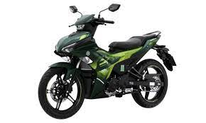
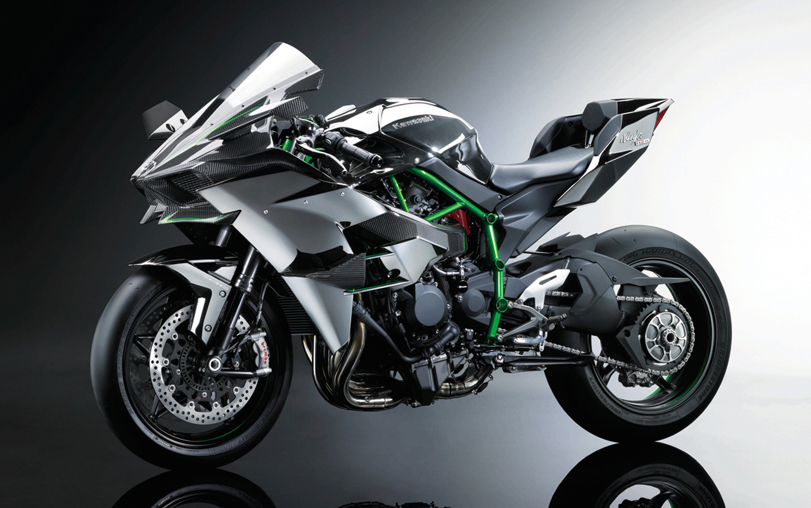
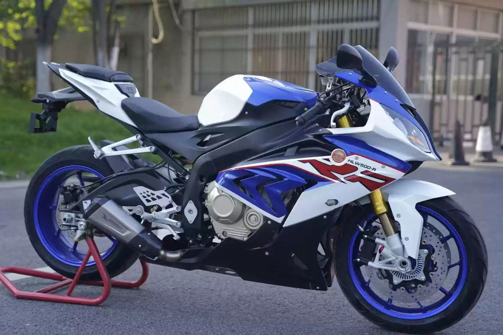
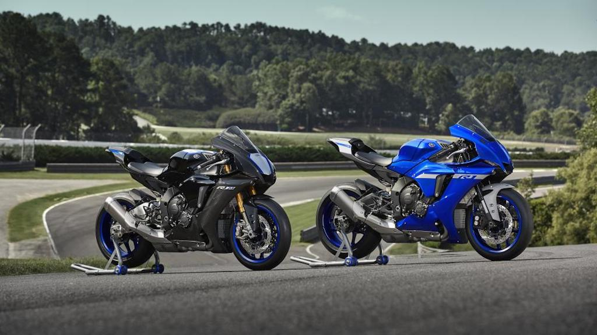
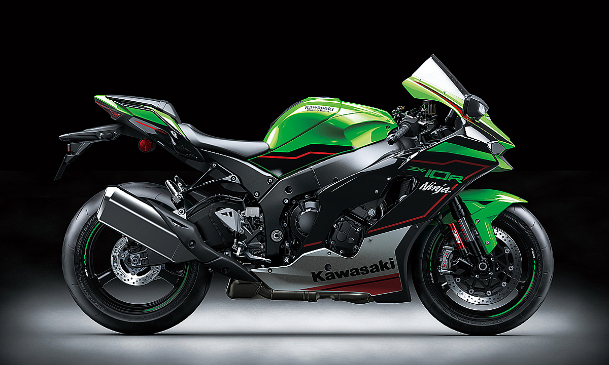
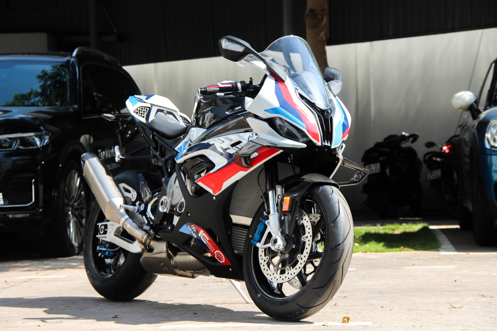

-

Yamaha Exciter 155 VVA
Ngày 29/12/2020, Yamaha Việt Nam đã trình làng Exciter thế hệ mới – Exciter 155 VVA 2022 sau 2 năm trình làng bản nâng cấp. Sự kiện ra mắt khá bất ngờ bởi trước đó, Yamaha Việt Nam luôn khẳng định trong năm 2020 sẽ không ra mắt Exciter mới.
-

Kawasaki Ninja H2,H2R
H2 là chiếc xe 750 phân khối, 3 xy lanh, 2 kỳ đã làm nên danh tiếng cho Kawasaki vào những năm 70 của thế kỷ trước. Hãng xe này đã làm sống lại quá khứ hào hùng của mình bằng việc ra mắt 2 hậu duệ xứng đáng của dòng xe H2 tại triển lãm INTERMOT diễn ra ở Cologne, Đức. H2R là phiên bản thiết kế cho dành cho đường đua với động cơ siêu nạp, thân xe ốp sợi cacbon và phiên bản H2 thường với mục đích thương mại.
-

BMW S1000XR
Vừa qua mẫu xe moto BMW S1000XR 2022 thuộc phân khúc Sport Adventure đã chính thức được phân phối chính hãng tại thị Việt Nam thông qua THACO – nhà phân phối chính thưc từ BMW Motorrad. S1000XR mới nhất 2022 có ngoại hình kết hợp giữa tính thể thao và sự đa dụng tương tự như người tiền nhiệm trước đây nhưng đã được hãng BMW nâng cấp hàng loạt công nghệ hiện đại hơn nhằm tối ưu hóa tính trải nghiệm của người dùng.
-

Yamaha YZF-R1
Yamaha R1 2021 nằm trong dòng xe phân khối lớn(PKL) thể thao R-series chủ chốt của Yamaha với kiểu dáng thuần Sport. Trải qua 3 thế hệ kể từ lần đầu ra mắt vào năm 1998, Yamaha R1 2021 đã trở thành một trong những mẫu superbike 1.000 cc thành công nhất của nền công nghiệp môtô Nhật Bản.
-

Kawasaki Ninja ZX10R
Kawasaki Ninja ZX-10R ABS 2022 được nhập khẩu nguyên chiếc về Việt Nam. Giá xe Ninja ZX-10R 2021 hiện nay tại các đại lý Kawasaki dự kiến sẽ rơi vào khoảng 729.000.000 (đã bao gồm VAT, chưa có phí trước bạ và biển số). Ninja ZX-10R là Superbike cạnh tranh với các đối thủ cùng phân khúc 1000 phân khối, không được trau chuốt trong thiết kế như các đối thủ Ducati, MV Agusta nhưng lại được đánh giá cao về phần tốc độ thiết kế góc cạnh thiên về khí động học.
-

BMW M1000RR
Tháng 9/2020, BMW Motorrad ra mắt M1000RR, mẫu xe hai bánh đầu tiên của hãng với huy hiệu M Performance, phân nhánh hiệu năng cao được BMW sử dụng trên dòng ôtô. Đây là phiên bản mạnh mẽ và cao cấp nhất trong dải sản phẩm dòng superbike thương mại của hãng Đức. Mới đây, BMW M1000RR đã cập bến Việt Nam theo diện phân phối chính hãng và xuất hiện tại showroom ở quận Phú Nhuận.